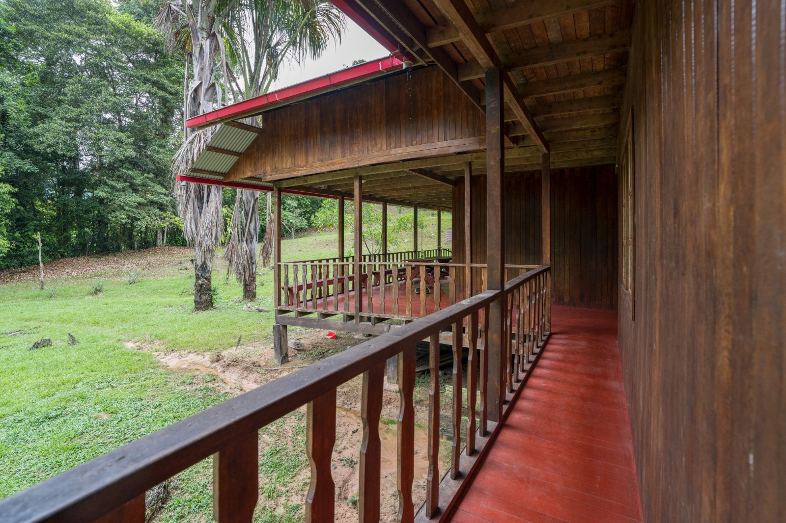
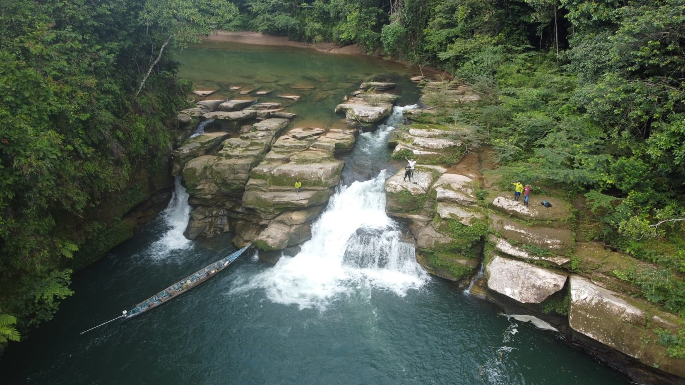
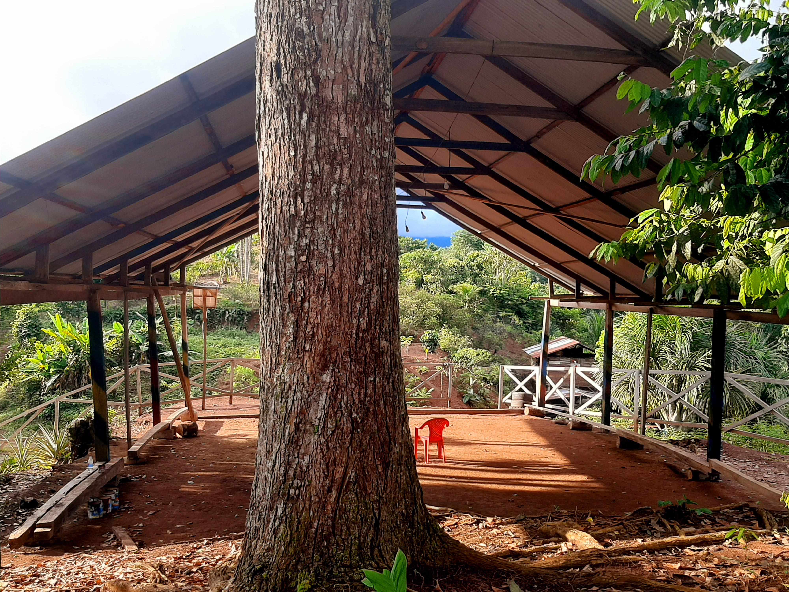

Pampa Limeña
Praderas, árboles y paisaje rural en un fundo de Palcazú.
Conocer el fundo↗
Descubre lugares de Palcazú y su entorno. Cada visita tiene sus propios accesos, condiciones y ritmo.
Praderas, árboles y paisaje rural en un fundo de Palcazú.

Bosques conectados y la visita al sector Paujil desde Palcazú.
La plaza, sus murales y la vida cotidiana que reúne al valle.

El Tobogán Natural de Iscozacín y la cascada Mugñiz, con accesos propios.
Lengua, saberes del bosque y textiles que expresan identidad.

Un punto de observación del paisaje, cerca de Iscozacín.
Prueba con otra palabra o vuelve a ver todos los destinos.
Los destinos están documentados en fuentes públicas. Los recorridos, permisos y servicios se coordinan para cada viaje; estas tarjetas no confirman una reserva.